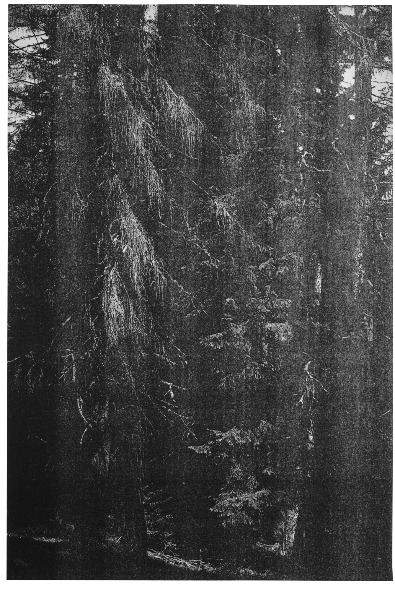
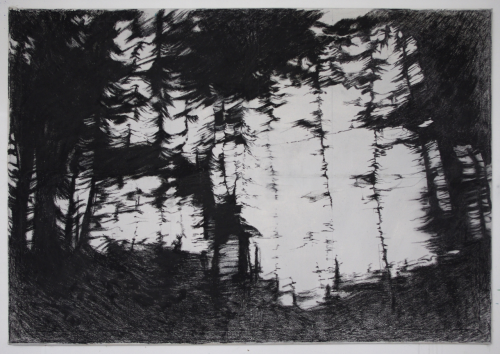

Josef Albers, from The Interaction of Color (1963)
5/29/21
Quilt, artist/date unknown
5/29/21
Susan Kare's wallpaper for Microsoft (1989)
5/29/21
Valerie Maser Flanagan, "Summer In The City" #1, 33" x 23"
5/26/21
Laurie Spiegel, "Some of My Early Computer Art from 1970s Bell Labs"
5/15/21
 Rosie Lee Tompkins, Untitled c. 1996. Media: found and repurposed
cotton T-shirts, found and repurposed silk or polyester neckties, cotton knit,
acrylic yarn, cotton embroidery, polyester knit, and polyesterbacking.
5/6/21
Rosie Lee Tompkins, Untitled c. 1996. Media: found and repurposed
cotton T-shirts, found and repurposed silk or polyester neckties, cotton knit,
acrylic yarn, cotton embroidery, polyester knit, and polyesterbacking.
5/6/21
George Macunias, Fluxus mail art, 1973
5/3/21
Robert Rauschenberg, Thirty-Four Illustrations for Dante’s Inferno, 1958-1960
5/3/21
Daido Moriyama, Homecoming, Tachikawa, 1969
5/3/21

Wolfgang Tillmans, Wald (Briol III), 2008
5/3/21
Poster for A Woman Under the Influence (1974)
5/3/21
Agnes Martin, Untitled (Image #4), 1998
5/3/21
Gerhard Richter, Forest (10), 2005
5/3/21
Diane Arbus, Clouds on Screen at a Drive-in Movie Theater, New Jersey, 1960
5/3/21
Roxy Paine, Large Soap, 840 bars of soap encased in resin, 1993
5/3/21

Alise Bēržvade, Sliding woods, 2018
5/3/21
A to Z Video Cherokee Street Saint Louis, MO, (1988) via @oldroadside
5/3/21
 Cloud/Anti-Cloud, desert of Australia
5/3/21
Cloud/Anti-Cloud, desert of Australia
5/3/21
Auto Cinema Route 11 Midfield, AL, (1980) via @oldroadside
5/3/21
Cowboys, (artist/date unknown)
5/3/21